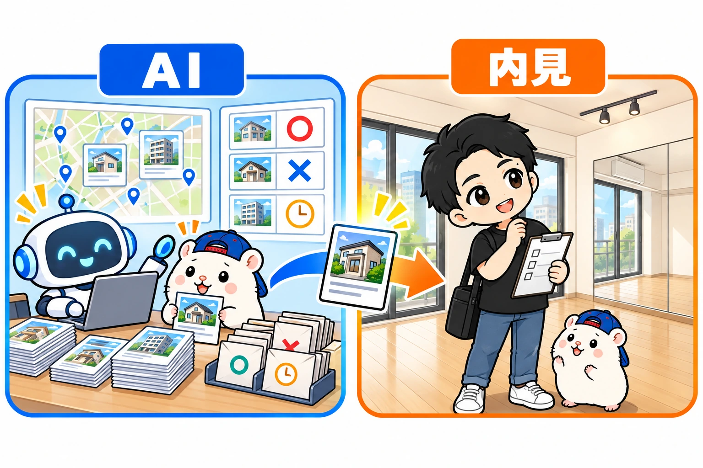

レンタルスペースの物件探し。
ぼくが自分でやっているのは、内見に行くことだけです。
それ以外は、ぜんぶAIに任せています。
今も、このやり方で物件を探しています。
AIに任せていることは、3つにまとまります。
- 探す(駅を選んで、検索を保存する)
- 点数をつけて、問い合わせる
- 返事を拾って、まとめる
今日は、この3ステップを順番に書きます。
この記事に出てくる画面は、ぼくが今も物件探しにつかっているツールの、実際の画面です。
同じツールを、本の付録にしています。
物件探しが、いちばん大変
レンタルスペースを出すとき、いちばん大変なのは物件探しです。
ただ借りられる物件では、だめなんです。
レンタルスペースとして使えて、しかも利益が出る物件。
この2つがそろっていないといけません。
不動産のポータルサイトに条件を入れても、なかなか出てきません。
出てきても、問い合わせたら「レンタルスペースはNGです」。
これを毎日、手でくり返すのは、正直しんどいです。
ステップ1: 探す
駅を、AIに選んでもらう
ポータルサイトで探すときは、まず駅かエリアを選びますよね。
この駅選びから、AIにやってもらいます。
見るポイントは2つです。
1つめは、乗降客数。
その駅を、1日に何人が使っているか。
2つめは、駅の性格。
- 新宿・渋谷のような、繁華街の駅
- 新橋・有楽町のような、オフィス街の駅
- 吉祥寺・中野のような、商店街の駅
- 浜田山・久我山のような、住宅地の駅
- 明大前のような、学生の多い駅
同じ乗降客数でも、駅の性格で、来るお客さんがまったくちがいます。
このポイントを伝えると、AIが候補の駅をバーッと出してくれます。
本の付録「物件探しツール for ダンス」の実際の画面。都道府県を選ぶだけで、乗降客数・まわりの人口・子どもの割合から、レンタルスタジオ向きの駅に◎○がつきます(例: 大阪府)
条件を伝えて、検索を保存する
駅が決まったら、希望の条件を伝えます。
- 駅から徒歩何分以内か
- 広さ
- 家賃
- 坪単価
- 何階か
- 建物の構造
- 店舗か、事務所か、住居の事務所可か
この条件で、AIにポータルサイトを検索してもらいます。
そして、検索条件を保存してもらいます。
ここが大事です。
希望どおりの物件が、1回の検索で出てくることは、まずありません。
物件探しは、続けて探すものです。
だから、保存した条件で、AIに定期的に探してもらいます。
新着が出たら、そのたびに拾ってくれます。
ステップ2: 点数をつけて、問い合わせる
たとえば今日、検索したら20件出てきたとします。
この20件を、AIに採点してもらいます。
ものさしは、ステップ1で伝えた条件です。
ぼくの場合は、100点満点で「この物件は何点」と出してもらって、点数の高い順にしてもらいます。
点数の高い物件から、問い合わせです。
これもAIにやってもらいます。
メールでも、問い合わせフォームでも。
前もって、AIに渡しておくものがあります。
- 問い合わせの定型文
- 会社名と名前
- 電話番号とメールアドレス
これで、ぼくはチェックを入れて「問い合わせ」を押すだけです。
同じツールの実際の画面。集めた物件が100点満点で点数順に出て、◎○の物件をワンクリックで10件まとめて選べます(物件名と住所はぼかしています)
ひとつ注意があります。
ポータルサイトによっては、AIの自動操作が規約で禁止されていることがあります。
規約は先に確認してください。
もちろん、問い合わせだけ手でやるのもありです。
ステップ3: 返事を拾って、まとめる
問い合わせると、まず不動産屋さんから自動返信が来ます。
「◯営業日以内にご連絡します」というあれです。
そのあと、本当の返事が来ます。
「すみません、レンタルスペースはNGです」
「レンタルスペース、ご相談可能です」
この返事も、AIに定期的にGmailを見てもらって拾います。
そして、問い合わせた物件ごとに、状況をまとめてもらいます。
- まだ問い合わせていない
- 問い合わせ済み。返信待ち
- 返信あり。OK
- 返信あり。NG
- 内見予定
同じツールの「問い合わせ管理」の実際の画面。返信待ち・返信あり・内見予定・先方NGが物件ごとにまとまるので、2回問い合わせることもありません(物件名と住所はぼかしています)
これをやっておくと、もう1ついいことがあります。
同じ物件に、2回問い合わせなくてすむんです。
同じ物件を、ちがう不動産屋さんが別々に出していることは、よくあります。
リストがないと、気づかずに2回問い合わせてしまう。
リストで1件ずつ消していけば、ダブりもなく、漏れもありません。
電話で問い合わせたものだけは、自分でチェックを入れます。
人間がやるのは、内見だけ

「レンスペ、OKですよ」と返事が来たら、内見です。
ここだけは、自分で行くしかありません。
ぼくの場合、最初の検索条件だけ自分で入れておけば、あとは自動です。
どこに出したいかも、もう決めてあります。
- AIが定期的に探す
- AIが点数をつけて、ぼくは問い合わせを押す
- AIが返事をまとめて、ぼくは内見に行く
探すのはAI。
点数をつけるのもAI。
足を運ぶのは、自分。
内見して「ここに出そうかな」と思ったら、次は競合調査と、お金の計算です。
この話は、次の記事で書きます。
まずは、あなたが出したい駅の条件を、AIに文章で渡してみてください。
乗降客数と、駅の性格。
この2つだけで、候補の駅が出てきます。
あなたなら、どの駅から探しますか?
この記事の画面は、ぜんぶこのツールの実際の画面です。
ぼくがダンスのレンタルスタジオを出すために作って、今もこれで物件を探しています。
駅選びから採点、問い合わせ、進捗の管理まで、自動で回っています。
本の付録「物件探しツール for ダンス」のトップ画面(実際の画面)。使い方の動画(3本)つきなので、はじめてでも画面を見ながら進められます
このツールが、そのまま本の付録についてきます。
📘 『【きくりん式】レンタルスペースは「ダンススタジオ」で稼ぐ！完全ロードマップ』
ぼくの11店舗の実録と、駅の選び方・内見のチェックリストまで入っています。
第0部はまるごと無料で読めます。

販売価格は3部売れるごとに3,000円ずつ値上がりします（上限あり）。内容・最新価格は販売ページをご確認ください。
▼もう1つの副業、AI社員だけのeBay輸出店の実録🐹

▼ブログ(レンスペ×eBay、全記事まとめ)